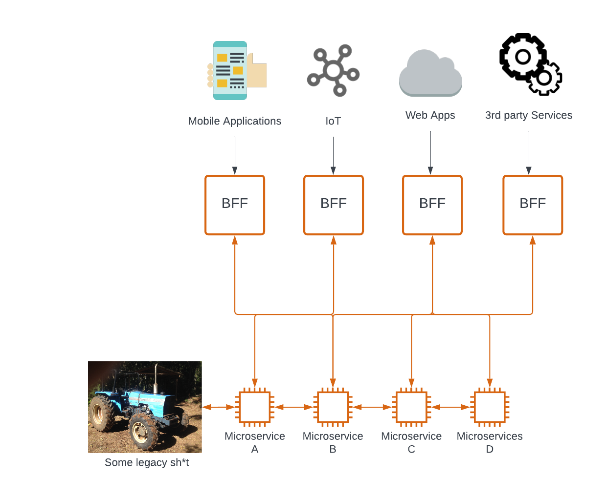
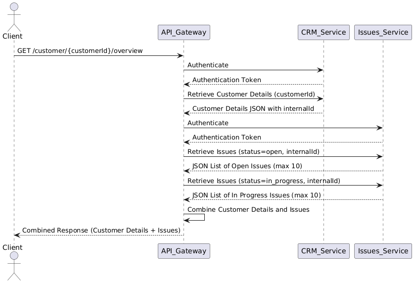

Requirements & API: Workflows
Most IDLs define a set of API endpoints related to a particular domain, entity, or service but do not specify in which workflows (or business processes) those API are utilized. This causes specific issues in end-to-end scenarios involving different pieces from one or another system.
Such API interactions should be appropriately defined and documented for a Client, requiring several API calls with some additional actions. There, we could distinguish:
- The UI layer (or any other API Client) requires orchestrating API requests to obtain data on a page composed of several entities and domains. Reports are a good example of this, as data from different sources must be combined to provide a comprehensive view.
- The backend layer must expose a "composite" API endpoint that aggregates API calls from various entities or systems.
The backend-for-frontend (BFF) approach can unify both cases. This design pattern considers creating dedicated backend services tailored to the specific needs of different client interfaces or user experiences (Sam Newman provides a good reading on the topic).

Simply put, we provide an additional API layer that removes the orchestration complexity from the UI, so it needs to make only one call instead of multiple. The backend also benefits, as it does not require maintaining UI-specific logic. This layer is part of the API intermediary, which can also be referenced as an API Gateway.
From there, we need to introduce the following categorization:
- Read vs. Write: There are requests to get ("read") information from a system and requests to alter information ("write").
- Sequential vs. Parallel: Sometimes, we can run several API requests to get some data simultaneously. In other cases, we must build a chain of calls logically extracting and passing the required data to proceed to the next step.
Disclaimer: any aggregation adds considerable complexity and the possibility of potential errors. Proceed with implementation wisely.
As a product owner or business analyst, you can either (1) provide documentation for a Client describing a workflow of API calls or (2) define internal logic for API calls under BFF/API Gateway.
The good news is that you can use the same tools for both cases. The bad news is that many tools have drawbacks.
Simple read-aggregation scenario
Let's assume that you need to expose a single API endpoint. Hence, your client gets customer details from the Legacy CRM example we did on the previous IDL chapter (link) extended with the list of open Issues reported by that Customer.
Ideally, we should provide two separate "Retrieve Customer Details" and "Retrieve Customer Issues" APIs and ask the Client to resolve a puzzle themselves. But to complicate matters, we assume that a 3rd-party service provides Issues with its own authentication. Plus, we don't want to expose that service to a Client for some business reasons.
The Customer and Issue entities are linked by internalId, meaning we get Customer details and then retrieve related issues. Thus, it is a sequential request.
As "Issues" is a separate service, we have a separate OpenAPI document describing its interface (link).
Let's also consider an additional functional requirement: the combined response contains up to 10 recent and not closed Issues associated with a Customer. Returning a response with hundreds or thousands of issues is not a good idea. So 10 is enough to show on a mobile screen, for example.
The final response will look like:
{
"customerId": "12345",
"internalId": "913ec1e3-4952-31a6-a24d-9ff71794ae40",
"firstName": "John",
"lastName": "Doe",
"email": "johndoe@example.com",
"phoneNumber": "+1-555-123-4567",
"address": {
"addressLine": "123 Main St",
"city": "Anytown",
"state": "CA",
"postalCode": "90210",
"country": "US"
},
"accountStatus": "Active",
"createdDate": "2023-02-15T12:34:56Z",
"issues": [
{
"id": "ISSUE001",
"title": "Login not working",
"description": "Customer is unable to log into their account.",
"status": "open",
"createdAt": "2025-01-20T08:30:00Z"
},
{
"id": "ISSUE002",
"title": "Payment processing error",
"description": "Payment fails with an error during checkout.",
"status": "in_progress",
"createdAt": "2025-01-19T10:15:00Z"
}
]
}
How can we define the workflow for that API?
Diagrams - UML Sequence
The best-known way for requirements engineers is to draw a diagram explaining the logic. UML's Sequence Diagram is the most common way to describe interactions across several services. PlantUML is a great format for visualizing such interactions.
@startuml
actor Client
participant API_Gateway
participant CRM_Service
participant Issues_Service
Client -> API_Gateway: GET /customer/{customerId}/overview
API_Gateway -> CRM_Service: Authenticate
CRM_Service --> API_Gateway: Authentication Token
API_Gateway -> CRM_Service: Retrieve Customer Details (customerId)
CRM_Service --> API_Gateway: Customer Details JSON with internalId
API_Gateway -> Issues_Service: Authenticate
Issues_Service --> API_Gateway: Authentication Token
API_Gateway -> Issues_Service: Retrieve Issues (status=open, internalId)
Issues_Service --> API_Gateway: JSON List of Open Issues (max 10)
API_Gateway -> Issues_Service: Retrieve Issues (status=in_progress, internalId)
Issues_Service --> API_Gateway: JSON List of In Progress Issues (max 10)
API_Gateway -> API_Gateway: Combine Customer Details and Issues
API_Gateway --> Client: Combined Response (Customer Details + Issues)
@enduml

When a Client requests, the API Gateway layer orchestrates calls to CRM and Issues services, handling authentication and data combination for response.
If you pay attention, you will see that we need to call Issue_Service twice to get open and in-progress issues. The Issues API can't handle two statuses simultaneously in a query filter.
In an ideal environment, you could request to extend that API to handle an array of status filters. But in reality, when dealing with a third-party API, you get what you get with little chance of considerable changes. This is an example of why sometimes you might not proceed with an optimal solution.
Also, we don't need to provide an explicit number of items on a page, as 10 is provided by default.
You can use different diagrams to describe a flow, such as a UML Activity or Flowchart. However, when the flow grows beyond a few steps, it becomes challenging to read. Thus, you need to write extensive notes explaining some details.
Another drawback is that such notation is not strict enough (or not mainly designed) to be machine-readable or executable.
Machine-readable formats - Arazzo
Like Interface Definition Languages, we would like a domain-specific language (DSL) to design and execute such a workflow.
Many Gateway (KrakenD, for example) or Framework-specific (Java DSL) DSLs exist. However, until recently, no commonly recognized and stack-agnostic formats were similar to OpenAPI. So, the guys responsible for OpenAPI decided to release Arazzo, a new specification that serves that purpose.
The Arazzo specification, released in 2024, is new. Compared with OpenAPI, it lacks a massive variety of tooling, so no ecosystem has been built around it. There are a few linters and a guideline on how to build end-to-end testing with it—no code generation, fancy UI documentation, etc. That all is yet to come, and this is an exciting aspect of that initiative.
Let's build the same workflow following the Arazzo specification:
What is going on there:
- In
sourceDescriptions, we define OpenAPI schemas for the Legacy CRM and Issues services. We assume we store them locally near the Arazzo document, but a URL can be provided as well. - Then, we start with
workflowsand add a single workflow with a few steps to make our read-aggregation. - In
steps, we define each unique step of our logic, referencing an operation from OpenAPI docs usingoperationId, likecrm-api.getCustomerDetails. Providing a path with a method is also possible, butoperationIdis better as a shortcut. - For a step, we define the input parameters an operation consumes (
customerIdand bearer token). Then we add response handling, considering code200as a success criterion and any possible failure as a reason to end the flow, as we can't proceed further without Customer data. - In the
steps.outputs, for a step, we assign response values we need:customerDetails, the entire response body to be used in the final output, andcustomerInternalIdto pass further to Issues APIs. - The flow for the Issues API is similar, except we pass the
customerInternalIdfrom the previous output as aninternalIdand add a new criterion for success: an array with Issues must not be empty. In thesteps.outputs, we retrieve the required array from the response body. - In the final
outputs, we define a final response combined with all the steps.
There are some following considerations:
- I don't know how to describe a case with authentication to a different service explicitly.
- I don't know how to combine open and in-progress issues into one array, sort them by date, and keep a maximum of 10 of them. The spec is probably not designed to handle such a logic.
- I ran the workflow through Redocly and Spectral linters, and although it passed, I am still unsure if the definition is correct.
Worth mentioning - Serverless Workflow
Arazzo is not the only open-source and language-agnostic tool for designing API flows. Serverless Workflow, with its DSL, has progressed further, allowing workflows to be developed across multiple services beyond HTTP APIs. Moreover, platforms already support executing the Serverless Workflow DSL documents.
Here is our example:
The structure should be already familiar to you from the previous example. But there are some interesting items:
- I can make an
openapitype call referencing an OpenAPI schema. I need to provide an endpoint to access the file and get the required operation viaoperationId. - The Issues calls have
httptype, meaning I don't need to reference an OpenAPI document and call HTTP APIs directly. - The
combineResultsstep was done with the help of ChatGPT, but it seems valid.
Although Arazzo and Serverless Workflow DSL look similar, the latter has very extended capabilities, which merit another article. We will see whether either format prevails or both find their place in the industry.